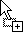
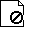

When the workflow builder is first launched,  pressed, or 'File/New' selected, an empty workflow document is created; this consists of a workflow containing a single sequence:
pressed, or 'File/New' selected, an empty workflow document is created; this consists of a workflow containing a single sequence:
You can add a name and description to your workflow to identify it by double clicking the workflow details (once a workflow is submitted to the Job Entry System it will also be given a unique Job ID).
To build a workflow simply drag an activity from the list on the left and drop it into an activity in the workflow tree. It is also possible to drag activities to different locations once they are in the tree:
The cursor will indicate whether it is possible to drop a particular activity at the chosen location:
| Microsoft Windows |
Solaris/ Linux |
Description |
|---|---|---|
|  |
|
Copy. The activity underneath accepts this type of drop. |
|
|
Copy. The activity underneath will not accept this drop. | |
|
|
|
Move. The activity underneath accepts this type of drop. |
|  | Move. The activity underneath will not accept this drop. |
If you successfully drop an activity into your tree an editor panel will appear automatically. Parameters relevant to the activity can be entered (some users maye prefer to turn off this auto popup feature and build the whole workflow before entering parameter values. This can be done with the preferences option. Any parameter entry can can be popped up latter by double clicking the activity in the tree).
As mentioned each step will contain a task, once you have entered the task details a resource chooser panel will be displayed which will enable you to search for a particular task:
Once you select a task, and a particular interface to that task if appropriate, you will be prompted to enter parameters for that task. Certain task parameters accept indirect references as their value e.g. a task may require a file as an input, or produce a file as an output. Checking the reference checkbox will open a browser so you can enter the reference.
The workflow document can be viewed by selecting the Document tab (if the document is not yet valid details of missing values etc will be detailed):

Once you are satisfied with your workflow it can be submitted to the Job Entry System or saved.